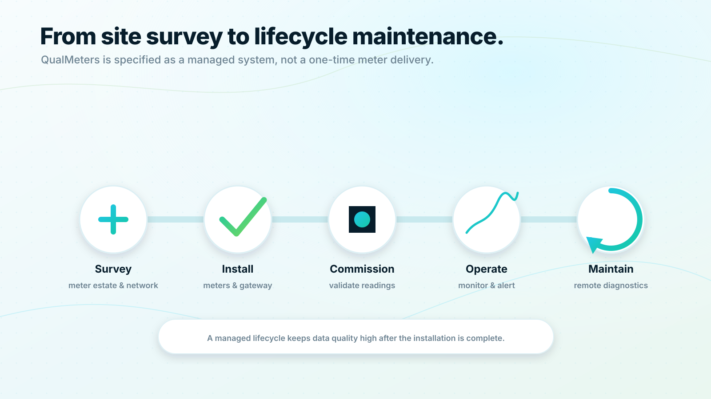

Deployment and managed operations
A metering system is only as good as its rollout.
QualMeters is designed as a managed system. Successful projects require meter planning, communication validation, commissioning, data quality monitoring and ongoing operational support.

Deployment and operations
Deployment phases
1. Site survey: Understand building layout, meter locations, protocols, network conditions and integration needs.
2. Meter and gateway plan: Choose meter types, cold and warm water requirements, gateway placement and communication architecture.
3. Installation: Install meters, gateways and required connectivity according to the approved plan.
4. Commissioning: Validate serial numbers, apartment mappings, readings, data freshness and portal access.
5. Operational monitoring: Track reading success, device health, alerts and integration status.
6. Lifecycle maintenance: Support meter replacements, firmware updates, gateway diagnostics and customer reporting.
Deployment and operations
Commissioning quality matters
Every meter should be connected to the correct apartment, temperature class, billing object and resident access process. QualMeters should treat commissioning as a data quality milestone, not just a physical installation task.
Deployment and operations
 Request a demo
Request a demo